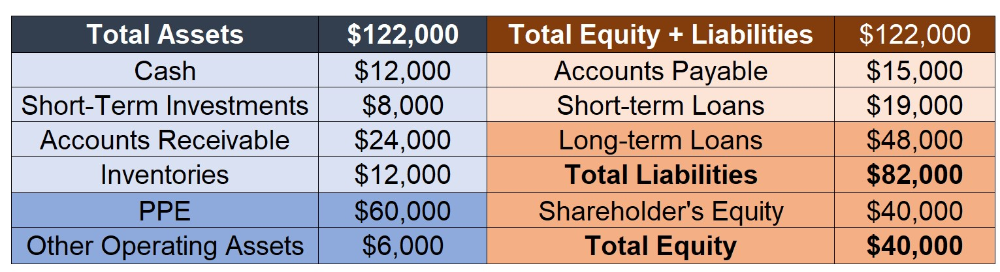
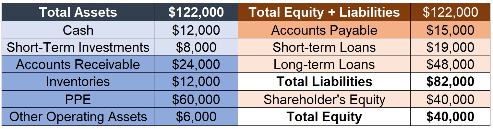
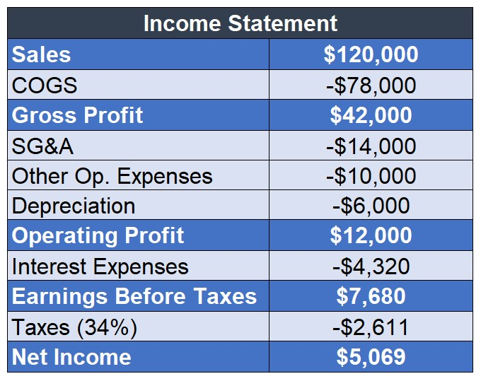
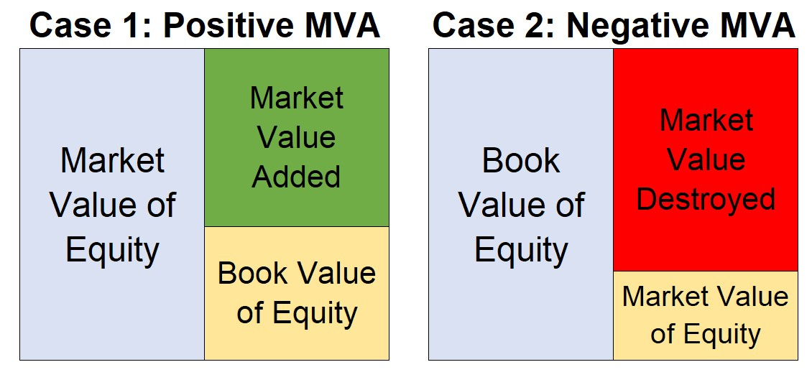

Economic Value Added (EVA)
Outline
The contents herein are not directly discussed in any of the three main textbooks presented in the syllabus
In this sense, this lecture will extensively use the following materials:
- 206016 - Understanding Economic Value Added
- XLS504 - Understanding Economic Value Added - supplementary .xlsx spreadsheet
\(\rightarrow\) Both contents are available on eClass®.
Dissecting Performance
Let’s get back to the example that we’ve worked on in the Financial Analysis lecture:

- Are the managers doing a good or a bad job?
Dissecting Performance, pt. 2
We saw that we can calculate a series of performance indicators that decompose Net Income:
Gross Profit Margin looks at the firm’s income after paying out directly-attributable costs;
Operating Margin shows the firm’s income after deducting all operating costs (+SG&A, Depreciation, etc);
NOPAT deducts taxes from operational performance and insulates the analysis from the effects of debt policy;
Net Income takes everything into consideration and provides a measure of the income generated that is attributable to the shareholders of the firm.
- What are we missing here?
Accounting vs Economic Performance
- Let’s make the Net Income as the starting point. If our goal is to analyze a firm’s operational performance, such metric contains a series of drawbacks:
- It considers both Operating and non-Operating performance altogether
- It includes both recurrent and non-recurrent results
- It is highly influenced by non-cash items, such as depreciation and amortization
- Accounting tax expenses may be highly influenced by external factors, such as tax compensations, tax shields, subventions etc
More importantly, we’re lacking a key component:
- Net Income only considers the cost of external capital, but it does not deduct the implied cost of the shareholders capital – i.e, Cost of Equity!
Why this last drawback is so important?
Consider two firms that generate $ 500MM in Net Income and have the same level of Assets. These firms are comparable across all dimensions, except that these firms are from totally distinct industries:
- The first company operates in a well-established business environment, a highly-predictable industry with a long track record
- The second company operates in a new market and a very dynamic business environment, with a lot of entry/exit of competitors
Should shareholders be indifferent between investing in these two firms? No! as investors will demand a different compensation for each firm!
The problem is that Net Income (or any derived metric) does not take this into consideration…
Therefore, a firm can generate profits to the shareholders and, at the same time, destroy value if the compensation is not enough to offset the risk!
Introducing EVA®
- Is the firm generating value to the shareholders?
- The first model that we’ll use to answer such questions is known as the Economic Value Added (also known as EVA®)
- It has been introducted by Stern and Stewart Co., a consulting firm
Economic Value Added (EVA®) measures the wealth a company creates (or destroys) each year. It is a company’s after-tax profit from operations minus a charge for the cost of all capital employed to produce those profits – not just the cost of debt, but the cost of equity as well
- Key differences when comparing to Net Income:
- EVA® considers only the operating portion of the firm, disregarding any non-operating results, such as interest income
- It considers both cost of debt (also included in Net Income) and the cost of equity (not observable, but estimated)
A concise explanation of how EVA® works:
(+) Sales Revenues
(-) Operating Costs (Direct and Indirect)
(=) Operating Profit
(-) Taxes on Operating Profit
(=) Net Operating Profit After Taxes
(-) Estimated Weighted Average Cost of Capital \(\times\) Capital Invested by Debt and Equity
(=) EVA®
- If EVA®>0 \(\rightarrow\) firm is creating value to the shareholders
- If EVA®>0 \(\rightarrow\) firm is destroying value to the shaholders
- If EVA®=0 \(\rightarrow\) shareholders are earning exactly what they should earn to compensate the risk
EVA® and Firm Value
EVA® is not observable, but rather estimated:
- We need to isolate the Operating Portion from the firms’ balance sheet to determine the Operating Capital invested
- We also need an estimate for the Weighted Average Cost of Capital (WAcC)
Notwithstanding, it expected that:
The higher the EVA® \(\rightarrow\) higher expectations about the firms’ prospects \(\rightarrow\) higher expected value \(\rightarrow\) higher stock price
However, expectations about the firms’ future results constantly change. Because of that, it is difficult to observe a direct relationship between EVA® and firm value
In the long-run, empirical studies show that, as expected, this relationship is positive
How to Calculate EVA®
- We’ll need to depart from purely using financial statements at this point
- First, we need to determine that is the Operating Capital
- This is not the same as of the firm’s Assets
- It focuses on the portion that the firm needs to run its operations, and discards items that are not part of that (i.e, short-term investments, financial investments etc)
- After that, we need to estimate:
- Tax-Rate - the effective tax-rate of the income statement can be misleading
- NOPAT - this can be estimated as Operating Income \(\times\) (1- the estimated Tax-Rate)
- WACC - the weighted average cost of capital
\[ \text{EVA}= \text{NOPAT} -\text{Operating Capital}\times \text{WACC} \]
Concept Check
Pizza Hut Ltd. has existing assets worth $500,000, of which it has operating capital invested of $150,000. The firm’s last reported Net Income was $15,000, and the Earnings Before Interest and Taxes (EBIT) was $50,000. Assuming a 40% tax-rate and a 15% cost of capital, calculate and interpret the firm’s Economic Value Added for the period.
\[ \small EVA= NOPAT- (WACC\times \text{Operating Capital})\rightarrow 50,000\times(1-40\%)-0.15\times 150,000 \]
- Therefore, EVA is simply:
\[ EVA=30,000-22,500=7,500 \]
- The firm has generated $7,500 of economic value for the period. This number, as opposed to the net income, takes into account the economic costs of all parties involved in financing the firm’s operations – i.e, creditors and shareholders.
A new way to look at the balance-sheet
- Let’s think about a concrete case:

- In general, we distinguish both side of the balance-sheet in terms of liquidity:
- Current Assets (Liabilities) are earned (due) at a short-period of time
- Long-Term Assets (Liabilities) are earned(due) at longer periods
Looking at the balance sheet in terms of liquidity

- In general, we distinguish both side of the balance-sheet in terms of liquidity:
- Current Assets (Liabilities) are earned (due) at a short-period of tiume
- Long-Term Assets (Liabilities) are earned(due) at longer periods
Looking at the balance sheet in terms of operating vs. financing

- We can also distinguish accounts in terms of their destination:
- Operating Assets (Liabilities) are highlighted in darker colors
- Financial Assets (Liabilities) are highlighted in lighter colors
Two ways of estimating Operating Capital
- There are two ways to estimate the Operating Capital that will make part of our calculations:
The first way is to address what is the amount of Operating Assets that a firm needs to have in place in order to run its operations
- It takes into account long-term operating assets, such as PPE and Machinery…
- But also takes into account all operating assets needed for the business (e.g, Inventories, Accounts Receivable, Cash)
- Formally, we can define it by:
\[ \small \text{Operating Capital}=\text{Long-Term Operating Capital + Net Working Capital Needs} \]
- We’ll study Working Capital shortly, but for now, think about all the money that we need to do pay current bills, buy inventories, and produce until we receive from our clients
Operating Capital, the Assets-side way
- Start with the Long-Term portion of Operating Assets:
(+) PPE: $60,000
(+) Other Operating Assets: $6,000
(=) Total: $66,000
- Now, estimate the net working capital needed to run the business:
(+) Cash: $12,000
(+) Inventories: $12,000
(+) Account Receivable: $24,000
(-) Accounts Payable: $15,000
(=) Total :$33,000
- Total Operating Capital: $66,000 + $33,000 = $99,000
Operating Capital, the Liabilities-side way
- Another way to calculate the Operating Capital is to look at the sources of Capital:
\[ \small \text{Operating Capital}=\text{Interest-bearing Liabilities + Equity} \]
- Interest-bearing Liabilities are, in general, all Liabilities that have interest expenses
- Equity is the totality of the book-value of Equity
(+) Short-Term Loans: $19,000
(+) Long-Term Loans: $48,000
(-) Short-Term Investments: $8,000
(+) Shareholder’s Equity: $40,000
(=) Total: $99,000
- Total Operating Capital: $19,000 + $48,000 - $8,000 + $40,000 = $99,000
Step 2: Calculating NOPAT
- We can use the Income Statement to calculate the Net Operating Profit After Taxes

Method 1: Operating Profit \(\times\) (1- Tax Rate)
- Operating Profit: $12,000
- Tax-Rate: 34%
- NOPAT= $12,000 \(\times\) (1-34%) = $7,920
- Operating Profit: $12,000
Method 2: Add back Interest Expenses (net of tax)
- Net Income: $5,069
- Interest Expenses: $4,320
- Tax Rate: 34%
- NOPAT= $5,069 + $4,320 \(\times\) (1-34%) = $7,920
Step 3: Calculating EVA®
Suppose that you calculated a Weighted Average Cost of Capital of 9.5%
Then, we can calculate EVA® as:
\[ \text{EVA} = \text{NOPAT}-\text{WACC}\times \text{Operating Capital} \]
Therefore, we have:
\[ \text{EVA} = 7,920-0.095\times99,000=7,920-9,405=-1,485 \]
- A profitable firm, after considering its Cost of Equity, may be destroying value!
- Net Income: +$5,069
- EVA: -$1,485
- Net Income: +$5,069
Return on Invested Capital
- Another way to compare and contrast returns and the opportunity cost of capital is to calculate the Return on Invested Capital (ROIC):
\[ ROIC=\dfrac{\text{NOPAT}}{\text{Operating Capital}}=\dfrac{7,920}{99,000}=8\% \]
- We see that the resulting return is lower than the cost of capital. We can recalculate the EVA:
\[ \small EVA= (ROIC-WACC)\times \text{Operating Capital}\rightarrow(8\%-9.5\%)\times 99,000= -1,485 \]
- Finally, we can also decompose ROIC in terms of Operating Margin and Operating Turnover:
\[ \small ROIC=\dfrac{NOPAT}{Sales}\times\dfrac{Sales}{\text{Operating Capital}}\rightarrow 6\%\times 1.22= 8\% \]
Practical thoughts on EVA
- All in all, how to improve a company’s EVA? We saw that EVA can be calculated as:
\[ EVA=(\text{ROIC}-\text{WACC})\times \text{Operating Capital} \]
Margins
- Increase revenues
- Seek for efficiencies in operating costs
Turnover
- Increase Sales
- Decrease the level of Assets needed to generate sales
- Allocate capital towards more productive assets
Market Value Added (MVA)
- If EVA is expected to be positively correlated with increases in value, then we can think about the amount of added value that a firm has in the stock market in terms of expected EVAs:
- The Market-Value-Added is the difference between Market Value and Book Value of Equity:
\[ \small MVA= \text{Market Value of Equity} - \text{Book Value of Equity} \] 2. Now, in equilibirum, we should expected if the Market Value of Equity to be the Book Value of Equity plus all the expected EVAs:
\[ \small MVA^\star \approx \underbrace{\text{B.V of Equity}+\dfrac{\sum_{t=1}^{\infty}\text{EVA}_{t}}{(1+r)^t}}_{\text{Market Value of Equity}}-\text{B.V Equity}\rightarrow MVA^\star \approx\dfrac{\sum_{t=1}^{\infty}\text{EVA}_{t}}{(1+r)^t} \]
Potential Dynamics - MVA

Case 1: \(\dfrac{\sum_{t=1}^{\infty}\text{EVA}_{t}}{(1+r)^t}\)>0
Case 2: \(\dfrac{\sum_{t=1}^{\infty}\text{EVA}_{t}}{(1+r)^t}\)<0
References